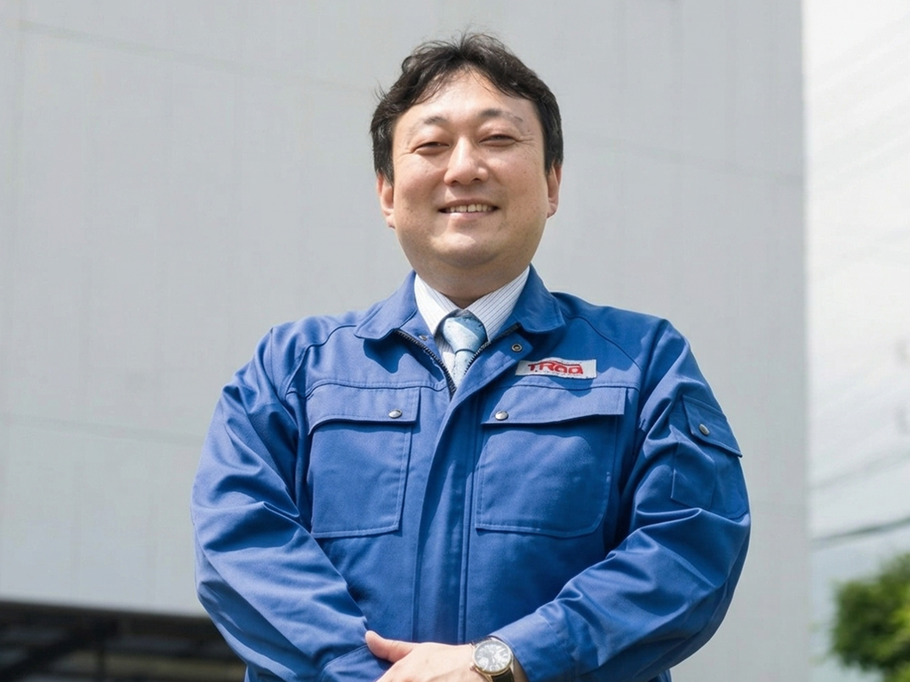

ティラドコネクト
ストーリー

宿泊業DXの成功体験から
製造業DXへのチャレンジへ
当社代表の宮﨑は、宿泊業向け基幹システム『陣屋コネクト』を自社開発し、業界のDX化を推進した先駆者として知られる人物です。
存続の危機に直面していた実家の旅館を継いで、経営改革を断行し業績を数年でV字回復させるとともに、その際に活用したシステム『陣屋コネクト』をパッケージ化して全国450以上の宿泊施設に提供することで、宿泊業界全体のDX化に貢献しています。
その取り組みは、第2回日本サービス大賞『総務大臣賞』を受賞する等、働き方改革・地方創生のモデル事例として、メディア・政府・業界から大きな注目を集めています。
前職の宿泊業での成功体験をもとに、製造業のDXにチャレンジすることになった宮﨑は、ティラドコネクトの設立に際して、株式会社陣屋コネクトとの合弁会社として、ノウハウを継承. ナレッジの伝承が終了した2020年10月の段階で、株式会社ティラドの100%子会社となりました。
ティラドコネクトは、旅館経営のDXツールを販売し成功したナレッジを受け継いでいるだけではなく、製造業としてのティラドのノウハウも引き継ぎ、新たな挑戦を始めています。
先端技術を活用した
製造業DXプラットフォームを構築
当社は世界的なCRMシステム「Salesforce」を活用したシステム「陣屋コネクト」を構築したノウハウ、技術的なナレッジを受け継ぎ「製造業のDXプラットフォーム」を構築しています。
製造業も宿泊業と同じくレガシーなやり方が多く残っている業界です。陣屋コネクトの成功体験を活かしてパッケージ製品の開発を進め、ティラドだけでなく製造業全体のDXに貢献できるプラットフォームを提供していきたいと考えています。
また、製造業のためのDXツールを、システム開発会社が開発するのではなく、製造業のシステム子会社が開発しているという点が重要です。当社には、製造業としてのティラドのノウハウがあります。製造業のワークフローを熟知している開発会社です。
当社では、Salesforceを含め、様々なサブシステム群をマイクロサービスとして開発・提供しティラドのDXを推進するとともに、DXツールをパッケージ化し外販することで、日本各地のメーカーのDXもサポートしていきたいと考えています。

サプライチェーン全体での
DX活用推進
ティラドコネクトが製造業務向けDXツールを開発・販売するのに強みとなるのが、親会社ティラドが持つネットワークです。仕入先にDXツールの導入を促し、会社間でデータ連携を進めることで、効率的な経営ができるようになります。
部品や素材メーカーなどの仕入れ先を含めたサプライチェーン全体でデータ連携することで、各社の経営効率がアップします。ティラドの仕入先150社と連携を進めており、フィードバックを頂いてパッケージ製品をブラッシュアップしています。
また、ティラドコネクトの開発は、Salesforceだけに留まりません。AWSやローコードツール「Mendix」も活用し、物体認識AI開発やテキストマイニングによる課題分析、生産指示最適化および生産指示自動エンジン開発…等、広く様々な挑戦をしています。
データレイクを構築してAIやIoTを活用することで、積み重なったデータを価値に変換していきます。データ収集・蓄積から、データの分析へ。分析した内容は、現場へフィードバックされるだけなく、対策立案のキーとして活用されます。
これによって、データドリブンな経営判断ができ、設計生産性の向上、投資や経営改善の意思決定アシスト、製品開発のスピードアップとコストダウン、営業戦略立案アシスト等が可能となります。